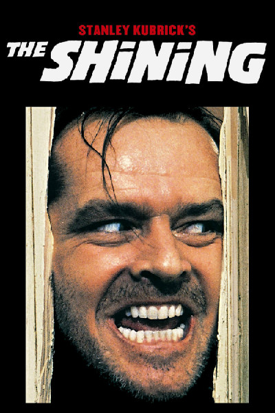

Nathalia Coutinho
Web Developer student @LeWagon
Hi, I'm Nathalia, a Web developer newbie, currently absorbing every bit of knowledge possible from the Le Wagon bootcamp.
My favorite movies
|  |
1980 - The ShinningJack Torrance (Jack Nicholson) becomes winter caretaker at the isolated Overlook Hotel in Colorado, hoping to cure his writer's block. He settles in along with his wife, Wendy (Shelley Duvall), and his son, Danny (Danny Lloyd), who is plagued by psychic premonitions. As Jack's writing goes nowhere and Danny's visions become more disturbing, Jack discovers the hotel's dark secrets and begins to unravel into a homicidal maniac hell-bent on terrorizing his family. |
1991 - The Silence of the LambsJodie Foster stars as Clarice Starling, a top student at the FBI's training academy. Jack Crawford (Scott Glenn) wants Clarice to interview Dr. Hannibal Lecter (Anthony Hopkins), a brilliant psychiatrist who is also a violent psychopath, serving life behind bars for various acts of murder and cannibalism. Crawford believes that Lecter may have insight into a case and that Starling, as an attractive young woman, may be just the bait to draw him out. |
|
1995 - CluelessShallow, rich and socially successful Cher (Alicia Silverstone) is at the top of her Beverly Hills high school's pecking scale. Seeing herself as a matchmaker, Cher first coaxes two teachers into dating each other. Emboldened by her success, she decides to give hopelessly klutzy new student Tai (Brittany Murphy) a makeover. When Tai becomes more popular than she is, Cher realizes that her disapproving ex-stepbrother (Paul Rudd) was right about how misguided she was -- and falls for him. |